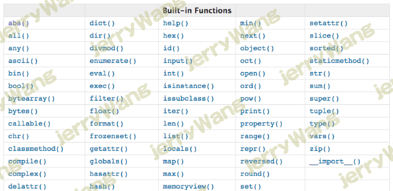

三元表达式 1 2 name = 'allen' print ('验证失败' ) if name!='allen' else print ('验证成功' )
列表推导式 1 2 3 4 5 6 7 8 9 10 11 12 13 14 15 16 17 18 19 20 21 22 23 24 25 26 27 28 29 30 31 32 test_list=[] for i in range (10 ): test_list.append('test_%s' %i) test_list=['test_%s' %i for i in range (10 )] print (test_list)res=['test_{}' .format (item+item1) for item in range (10 ) if item==3 for item1 in range (66 ) if item1==10 ] res=[itemN for item1 in iterable1 if item1 for item2 in iterable2 if item2... for itemN in iterableN if itemN] res=[] for item1 in iterable1: if item1: for item2 in iterable2: if item2 ... for itemN in iterableN: if itemN: res.append(itemN)
生成器表达式 1 2 3 4 5 6 7 8 9 10 11 12 >>> chicken=('鸡蛋%s' %i for i in range (5 ))>>> chicken<generator object <genexpr> at 0x10143f200 > >>> next (chicken)'鸡蛋0' >>> list (chicken) ['鸡蛋1' , '鸡蛋2' , '鸡蛋3' , '鸡蛋4' ,]
递归 递归调用的定义 递归函数 recursion：函数直接或间接的调用自身，是python算法中比较核心的概念。
递归函数必须具备以下3个特点：
1.直接或者间接调用自身
2.具有结束条件，防止递归外溢
3.代码规模逐渐减少
1 2 3 4 5 6 7 8 9 10 11 12 13 14 15 16 17 18 19 20 21 22 23 24 25 26 27 28 29 30 def f1 (): print ('from f1' ) f1() f1() def f1 (): print ('from f1' ) f2() def f2 (): print ('from f2' ) f1() f1() import syssys.getrecursionlimit() sys.setrecursionlimit(2000 ) def f1 (n ): print ('from f1' ,n) f1(n+1 ) f1(1 )
递推与回溯 递归的递推：递归每一次都是基于上一次进行下一次的执行。
递归的回溯：当遇到终止条件，则从最后往回一级一级的把值返回来。
1 2 3 4 5 6 7 8 9 10 11 12 13 14 def age (n ): if n == 1 : return 18 return age(n –1 ) + 2 print (age(5 ))这是一个典型的递归递推算法，它的每一次执行都是基于上一次的结果。
1 2 3 4 5 6 7 8 9 10 11 12 13 14 15 16 17 18 def fx (n ): print ("递归进入第" ,n,"层" ) if n == 3 : return n fx(n + 1 ) print ("递归退出第" ,n,"层" ) fx(1 ) print ("程序结束" )运行结果： 递归进入第 1 层 递归进入第 2 层 递归进入第 3 层 递归退出第 2 层 递归退出第 1 层 程序结束 这是一个典型的递归回溯算法，满足终止条件时，一级一级的把值返回来。
总结：
递归必须要有一个明确的结束条件, 否则就变成死循环导致栈溢出，以上两例都是以“if”语句作为结束条件的。每递归一次要解决一些事情，否则就失去了递归的意义。
python中的递归效率低且没有尾递归优化
python中的递归效率低，需要在进入下一次递归时保留当前的状态，在其他语言中可以有解决方法：尾递归优化，即在函数的最后一步（而非最后一行)调用自己。
递归效率不高，递归层次过多会导致栈溢出（在计算机中，函数调用是通过栈（stack）这种数据结构实现的，每当进入一个函数调用，栈就会加一层栈帧，每当函数返回，栈就会减一层栈帧。由于栈的大小不是无限的，所以，递归调用的次数过多，会导致栈溢出）
二分法 想从一个按照从小到大排列的数字列表中找到指定的数字，遍历的效率太低，用二分法（算法的一种，算法是解决问题的方法）可以极大低缩小问题规模
1 2 3 4 5 6 7 8 9 10 11 12 13 14 15 16 17 18 19 20 21 22 23 l=[1 ,2 ,10 ,30 ,33 ,99 ,101 ,200 ,301 ,311 ,402 ,403 ,500 ,900 ,1000 ] def search (n,l ): print (l) if len (l) == 0 : print ('not exists' ) return mid_index=len (l) // 2 if n > l[mid_index]: l=l[mid_index+1 :] search(n,l) elif n < l[mid_index]: l=l[:mid_index] search(n,l) else : print ('find it' ) search(3 ,l)
1 2 3 4 5 6 7 8 9 10 11 12 13 14 15 16 17 18 19 20 l=[1 ,2 ,10 ,30 ,33 ,99 ,101 ,200 ,301 ,402 ] def search (num,l,start=0 ,stop=len (l )-1 ): if start <= stop: mid=start+(stop-start)//2 print ('start:[%s] stop:[%s] mid:[%s] mid_val:[%s]' %(start,stop,mid,l[mid])) if num > l[mid]: start=mid+1 elif num < l[mid]: stop=mid-1 else : print ('find it' ,mid) return search(num,l,start,stop) else : print ('not exists' ) return search(301 ,l)
匿名函数 1 2 3 4 5 6 7 8 9 10 11 12 13 14 15 16 def func (x,y,z=1 ): return x+y+z lambda x,y,z=1 :x+y+z func=lambda x,y,z=1 :x+y+z func(1 ,2 ,3 ) def func (x,y,z=1 ): print (x+y+z) func(2 ,3 ) print ((lambda x,y,z=1 :x+y+z)(2 ,3 ))
1 2 3 4 有名函数：循环使用，保存了名字，通过名字就可以重复引用函数功能 匿名函数：一次性使用，随时随时定义 应用：max ，min ，sorted ,map ,reduce,filter
lambda 代码示例 将lambda函数传递给一个另外一个函数call_func()进行处理的过程，在call_func中首先通过datetime包中的datetime.now()打印时间。然后调用被传递的函数。不仅lambda函数可以作为参数传递给其他函数，普通函数也可以当做参数传递
1 2 3 4 5 6 7 8 9 10 11 12 13 14 15 16 17 18 19 20 21 22 23 24 25 26 27 28 29 import datetimedef namedFync (a ): return "I'm named function with param {}" .format (a) def call_func (func,param ): print (datetime.datetime.now()) print (func(param)) print ("" ) if __name__ == '__main__' : call_func(namedFync,'hello' ) call_func(lambda x:x*2 ,9 ) call_func(lambda y:y*y,-4 ) 2019 -12 -26 13 :57 :45.356044 I'm named function with param hello 2019-12-26 13:57:45.356044 18 2019-12-26 13:57:45.356044 16
内置函数 ## format
1 2 3 4 5 6 7 8 9 10 11 12 13 14 15 16 17 18 19 20 21 22 23 24 25 26 27 28 29 30 31 32 33 34 35 36 37 38 39 40 41 42 43 44 45 46 47 48 49 50 51 52 53 54 55 56 57 58 59 60 61 62 63 >>> format ('some string' ,'s' )'some string' >>> format ('some string' )'some string' >>> format (3 ,'b' ) '11' >>> format (97 ,'c' ) 'a' >>> format (11 ,'d' ) '11' >>> format (11 ,'o' ) '13' >>> format (11 ,'x' ) 'b' >>> format (11 ,'X' ) 'B' >>> format (11 ,'n' ) '11' >>> format (11 ) '11' >>> format (314159267 ,'e' ) '3.141593e+08' >>> format (314159267 ,'0.2e' ) '3.14e+08' >>> format (314159267 ,'0.2E' ) '3.14E+08' >>> format (314159267 ,'f' ) '314159267.000000' >>> format (3.14159267000 ,'f' ) '3.141593' >>> format (3.14159267000 ,'0.8f' ) '3.14159267' >>> format (3.14159267000 ,'0.10f' ) '3.1415926700' >>> format (3.14e+1000000 ,'F' ) 'INF' >>> format (0.00003141566 ,'.1g' ) '3e-05' >>> format (0.00003141566 ,'.2g' ) '3.1e-05' >>> format (0.00003141566 ,'.3g' ) '3.14e-05' >>> format (0.00003141566 ,'.3G' ) '3.14E-05' >>> format (3.1415926777 ,'.1g' ) '3' >>> format (3.1415926777 ,'.2g' ) '3.1' >>> format (3.1415926777 ,'.3g' ) '3.14' >>> format (0.00003141566 ,'.1n' ) '3e-05' >>> format (0.00003141566 ,'.3n' ) '3.14e-05' >>> format (0.00003141566 ) '3.141566e-05'
lambda与内置函数结合使用 1 2 3 4 5 6 7 8 9 10 11 12 13 14 15 16 17 18 19 20 21 22 23 24 25 26 27 28 29 30 31 32 33 34 35 36 37 38 39 40 41 42 43 44 字典的运算：最小值，最大值，排序 salaries={ 'allen' :3000 , 'alex' :100000000 , 'wupeiqi' :10000 , 'yuanhao' :2000 } 迭代字典，取得是key，因而比较的是key的最大和最小值 >>> max (salaries)'yuanhao' >>> min (salaries)'alex' 可以取values，来比较 >>> max (salaries.values())>>> min (salaries.values())但通常我们都是想取出，工资最高的那个人名，即比较的是salaries的值，得到的是键 >>> max (salaries,key=lambda k:salary[k])'alex' >>> min (salaries,key=lambda k:salary[k])'yuanhao' 也可以通过zip 的方式实现 salaries_and_names=zip (salaries.values(),salaries.keys()) 先比较值，值相同则比较键 >>> max (salaries_and_names)(100000000 , 'alex' ) salaries_and_names是迭代器，因而只能访问一次 >>> min (salaries_and_names)Traceback (most recent call last): File "<stdin>" , line 1 , in <module> ValueError: min () arg is an empty sequence sorted (iterable，key=None ,reverse=False )！！！lambda 与内置函数结合使用！！！
eval与exec 1 2 3 4 5 6 7 8 9 10 11 12 13 14 15 16 17 18 19 20 21 s='1+2+3' print (eval (s)) print (exec (s)) ''' None ''' print (eval ('1+2+x' ,{'x' :3 },{'x' :30 })) print (exec ('1+2+x' ,{'x' :3 },{'x' :30 })) print (exec ('for i in range(10):print(i)' ))eval 与exec
complie（了解即可） 1 2 3 4 5 6 7 8 9 10 compile (str ,filename,kind)s='for i in range(10):print(i)' code=compile (s,'' ,'exec' ) exec (code)s='1+2+3' code=compile (s,'' ,'eval' ) eval (code)
异常 异常处理 异常处理是编程语言中的一种机制，用于处理软件或信息系统中出现的异常状况（即超出程序正常执行的某些特殊条件）。
异常处理（又称错误处理）功能提供了处理程序运行时出现的任何意外或异常情况而不会使整个程序机制崩溃的方法。
Python异常处理使用try,catch,else,finally关键字来尝试可能未成功的操作、处理失败及正常情况，以及在事后情理资源。
1 2 3 4 5 6 7 8 9 10 11 12 13 14 15 16 17 18 19 20 21 22 23 24 25 26 27 28 29 30 31 32 33 34 try : <语句> except Exception1: <语句> except (Exception2,Exception3,Exception4) <语句> except Exception5 as e: print (e) except (Exception6,Exception7,Exception8) as e: print (e) except : <语句> else : <语句> finally : <语句>
自定义异常 1 2 3 4 5 6 7 8 9 10 try : print (1 +'1' ) except (Exception,TypeError) as e: print (e) finally : print (12 ) unsupported operand type (s) for +: 'int' and 'str' 12
raise显示引发异常 有关于python里raise显示引发异常的方法:
当程序出错时,python会自动触发异常,也可以通过raise显示引发异常 一旦执行了raise语句,raise之后的语句不在执行 如果加入了try,except,那么except里的语句会被执行 1 2 3 4 5 6 7 8 9 10 11 12 def mye ( level ): if level < 1 : raise Exception("Invalid level!" ) try : mye(0 ) except Exception as err: print (1 ,err) else : print (2 ) 1 Invalid level!
python标准异常 异常名称 描述 BaseException 所有异常的基类 SystemExit 解释器请求退出 KeyboardInterrupt 用户中断执行(通常是输入^C) Exception 常规错误的基类 StopIteration 迭代器没有更多的值 GeneratorExit 生成器(generator)发生异常来通知退出 StandardError 所有的内建标准异常的基类 ArithmeticError 所有数值计算错误的基类 FloatingPointError 浮点计算错误 OverflowError 数值运算超出最大限制 ZeroDivisionError 除(或取模)零 (所有数据类型) AssertionError 断言语句失败 AttributeError 对象没有这个属性 EOFError 没有内建输入,到达EOF 标记 EnvironmentError 操作系统错误的基类 IOError 输入/输出操作失败 OSError 操作系统错误 WindowsError 系统调用失败 ImportError 导入模块/对象失败 LookupError 无效数据查询的基类 IndexError 序列中没有此索引(index) KeyError 映射中没有这个键 MemoryError 内存溢出错误(对于Python 解释器不是致命的) NameError 未声明/初始化对象 (没有属性) UnboundLocalError 访问未初始化的本地变量 ReferenceError 弱引用(Weak reference)试图访问已经垃圾回收了的对象 RuntimeError 一般的运行时错误 NotImplementedError 尚未实现的方法 SyntaxError Python 语法错误 IndentationError 缩进错误 TabError Tab 和空格混用 SystemError 一般的解释器系统错误 TypeError 对类型无效的操作 ValueError 传入无效的参数 UnicodeError Unicode 相关的错误 UnicodeDecodeError Unicode 解码时的错误 UnicodeEncodeError Unicode 编码时错误 UnicodeTranslateError Unicode 转换时错误 Warning 警告的基类 DeprecationWarning 关于被弃用的特征的警告 FutureWarning 关于构造将来语义会有改变的警告 OverflowWarning 旧的关于自动提升为长整型(long)的警告 PendingDeprecationWarning 关于特性将会被废弃的警告 RuntimeWarning 可疑的运行时行为(runtime behavior)的警告 SyntaxWarning 可疑的语法的警告 UserWarning 用户代码生成的警告
 微信
微信 支付宝
支付宝